Pots
Gamifying micro-savings through delightful milestones, visual pathways, and modular rewards.

THE CHALLENGE
Traditional banking apps make saving money feel like a chore. Young users (Gen-Z and millennials) often struggle to maintain a consistent savings habit due to a complete lack of visual progression and immediate positive reinforcement. The client needed a micro-savings feature that transforms a spreadsheet-like chore into an engaging, visual game loop.
USER INSIGHTS & STRATEGY
"I want to save, but putting money away feels like losing it. I need to see that my money is actually building towards something, not just sitting in a hidden account." — Gen-Z Research Participant
Our strategy focused on three pillars:
- Visual Milestones: Breaking down a daunting $25,000 goal into accessible checkpoints.
- Dynamic Progress Mapping: A horizontal timeline where a walking train avatar reflects savings pacing.
- Ownership & Customization: Allowing users to choose target schedules (daily, weekly, monthly) that fit their cash flow.
THE GAMIFICATION LOOP
We implemented the Octalysis framework to drive core user motivation:
- Development & Accomplishment: Leveling up milestones as points along the path are unlocked.
- Ownership & Possession: Customizing personal savings schedules and adding unique pot goals (e.g., "Comic Collection").
- Unpredictability & Curiosity: Mystery reward points at specific milestone boxes along the visual path.
INTERACTIVE MILESTONE SIMULATOR
Use the interactive control below to simulate a user's savings growth. Watch how the milestones along the pathway automatically illuminate and transition into unlocked states!
KEY IMPACT & OUTCOMES
By shifting the focus from static balance sheets to a playful visual journey, users started checking the app 3x more frequently, celebrating small milestones as active progress rather than waiting for long-term completion.